A Bruxa do Pântano: local, mercadorias e preços
A Bruxa do Pântano vive numa cabana torta no Pântano com o seu gigante Kvastur. Vende ingredientes que não consegues arranjar em mais lado nenhum: especiarias para os grandes banquetes, itens para novos hidroméis e coisas úteis para a tua horta.
A Bruxa do Pântano: mostrar no mapa
Onde encontrar A Bruxa do Pântano
O acampamento da Bruxa do Pântano fica no Pântano. Também aqui o jogo prepara até dez acampamentos possíveis, e o primeiro de que te aproximas é o que fica no teu mundo.
Quando estás perto, aparece no teu mapa um ícone de caldeirão. O acampamento está protegido contra inimigos, o que faz dele um refúgio bem-vindo no Pântano. Mesmo assim, leva Hidromel de resistência ao veneno para o caminho.
O que vende A Bruxa do Pântano
A maioria das especiarias só fica disponível depois de derrotares o chefe do bioma correspondente. Muitos itens são vendidos em conjuntos. A tabela mostra o preço por conjunto.
| Item | Preço (moedas) | Disponível |
|---|---|---|
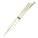 Pavio de vela × 50 | 100 | desde o início |
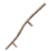 Cabo de foice | 200 | depois de derrotar Moder |
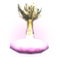 Poção do amor × 5 | 110 | desde o início |
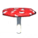 Amanita | 85 | depois de derrotar Moder |
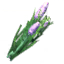 Punhado perfumado × 5 | 140 | depois de derrotar Moder |
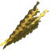 Algas marinhas frescas × 5 | 75 | desde o início |
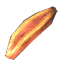 Tendão de esquilo curado × 5 | 80 | desde o início |
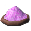 Casca de ovo de dragão em pó × 5 | 120 | desde o início |
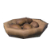 Adubo pungente × 5 | 125 | desde o início |
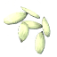 Sementes de hera × 3 | 65 | desde o início |
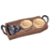 Bandeja | 140 | desde o início |
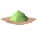 Mistura de ervas dos bosques × 5 | 120 | depois de derrotar O Ancião |
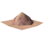 Ervas do marinheiro × 5 | 130 | depois de derrotar Serpente |
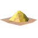 Pimenta em pó das montanhas × 5 | 140 | depois de derrotar Moder |
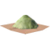 Colheita do herborista × 5 | 160 | depois de derrotar Yagluth |
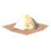 Ervas das Colinas Ocultas × 5 | 180 | depois de derrotar A Rainha |
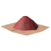 Pó de especiarias ardentes × 5 | 200 | depois de derrotar Fader |
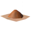 Tempero aboboral × 5 | 220 | depois de derrotar Kall Fimbulbringer |
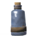 Frasco tampado × 5 | 150 | depois de derrotar O Ancião |
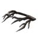 Coroa de raízes | 3.000 | depois de derrotar Writhan |
Dicas
- As especiarias são o ingrediente principal dos banquetes. Um banquete colocado numa mesa alimenta o grupo inteiro com uma das comidas mais fortes do seu nível e dá para muitas doses.
- A Bandeja permite-te transportar um banquete já preparado e pousá-lo noutro lugar, por exemplo mesmo antes de um combate contra um chefe.
- O Cabo de foice é necessário para a Foice, que colhe campos inteiros de uma só vez. É uma das melhores compras para quem cultiva muito.
- Os Pavios de vela são necessários para as velas, e das Sementes de hera nasce hera trepadeira nas tuas construções.
- Algas marinhas frescas, Tendão de esquilo curado, Casca de ovo de dragão em pó e Adubo pungente são ingredientes dos hidroméis mais recentes, que melhoram habilidades como nadar e correr ou protegem contra relâmpagos.
- Amanitas e Punhados perfumados ficam disponíveis depois de Moder. Servem para o Hidromel da fúria e para um hidromel que te limpa de efeitos negativos.
- As mercadorias dela são baratas em comparação com as de Haldor. Algumas centenas de moedas chegam para uma primeira visita.
O que podes vender
As Moedas são a única moeda de troca, e consegues obtê-las a vender objetos de valor. Os três comerciantes compram os mesmos itens aos mesmos preços. Encontras Moedas, Rubis e Âmbar nas Câmaras de enterro, nas Cavernas de troll, nas Criptas afundadas e nas aldeias de Fulings.
| Item | Vende-se por (moedas) |
|---|---|
| 175 | |
| 135 | |
| 95 | |
| 55 | |
| 30 | |
| 20 | |
| 10 | |
| 10 | |
| 5 |